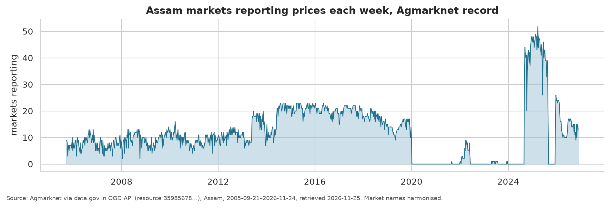
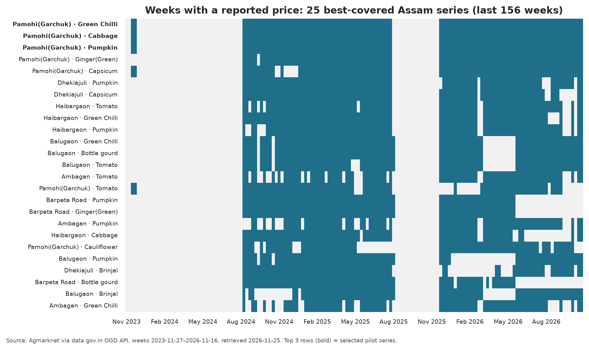
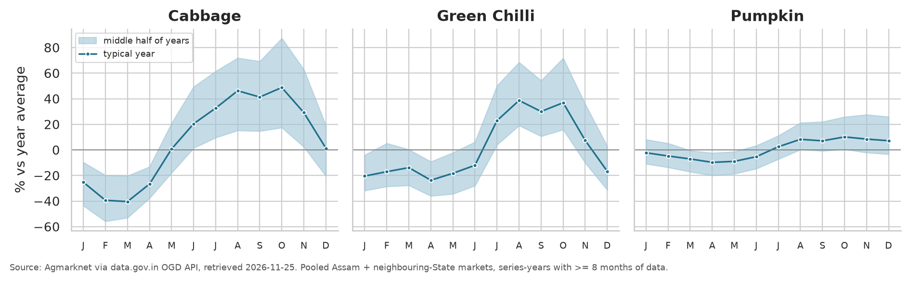
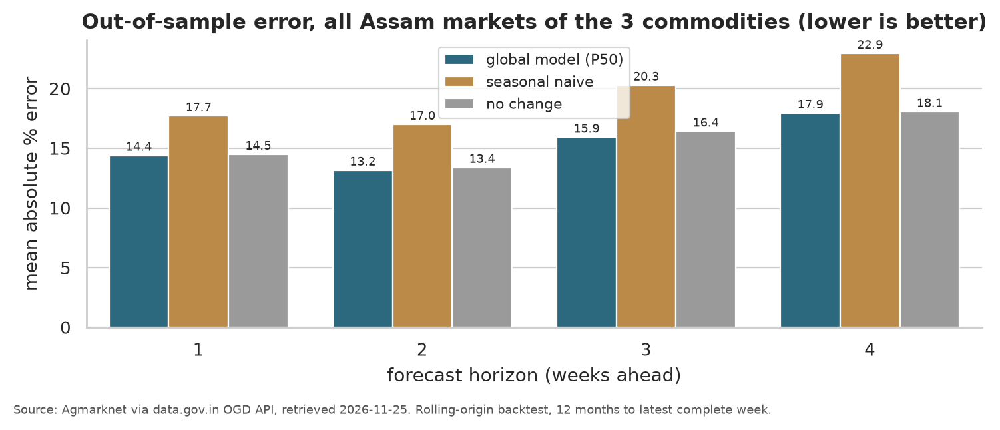
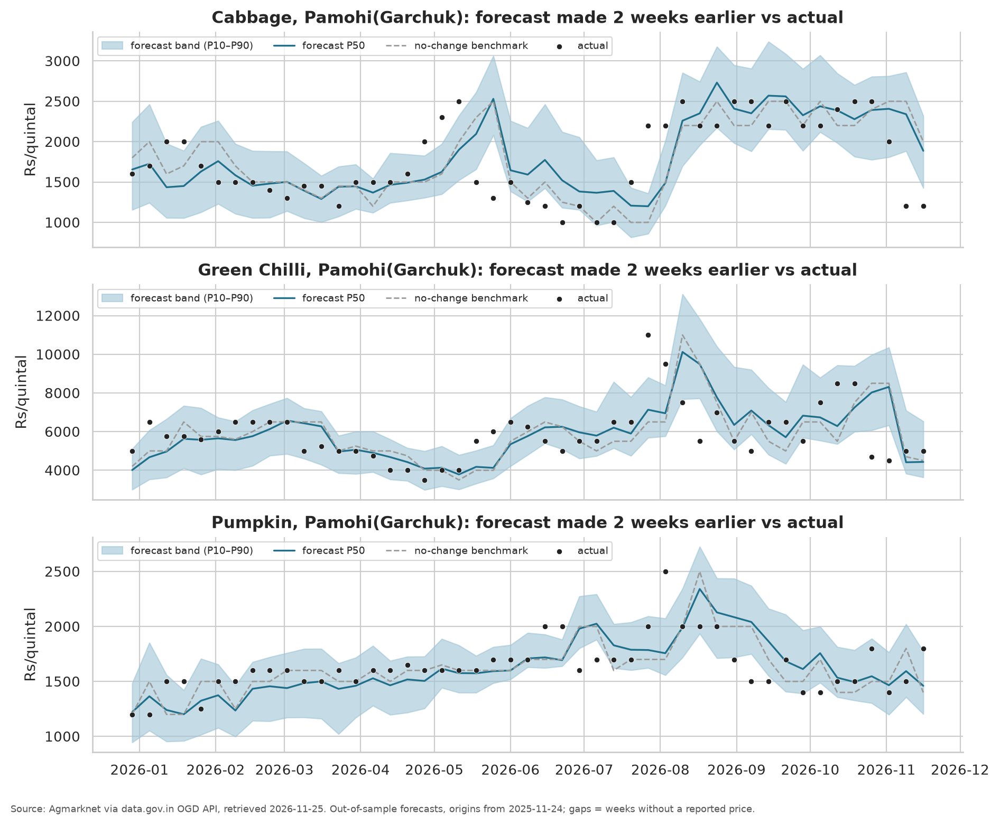
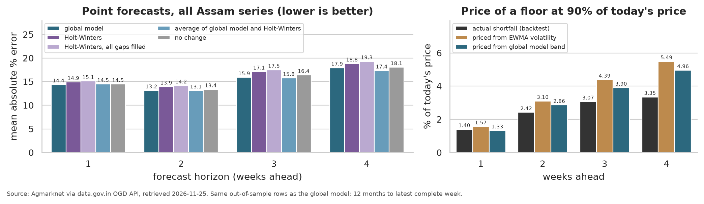
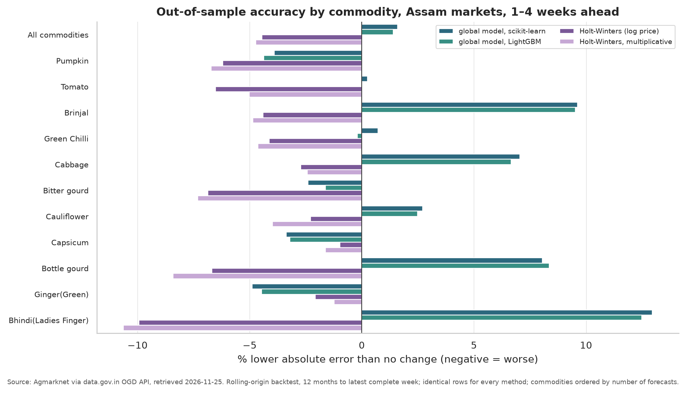
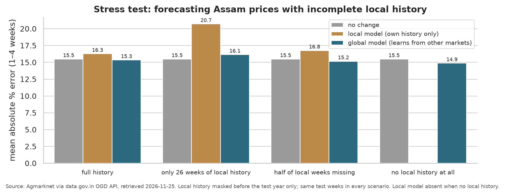

A working prototype built on real public market data: it measures the data problem, forecasts prices one to four weeks ahead with an honest out-of-sample test, turns forecasts into Hold / Sell / Store advice, and shows how farmers, Extension Assistants and AMIU would use it.
Applicant: Arijit Gogoi (individual applicant) · Prepared 25 November 2026 · Data retrieved 25 November 2026
Labels used throughout: BUILT + TESTED working code run on real data · MOCK-UP design shown with real prototype numbers, not yet deployed · PLANNED part of the proposal, not yet built.
Code and data snapshot: https://github.com/arijit-gogoi/bazar-sanket · Website: https://arijit-gogoi.github.io/bazar-sanket/. Every figure and number in this document and in the proposal answers is generated by the code from the data snapshot:
uv sync uv run python -I src/fetch.py pull --state Assam --since 2006-01-01 # optional: refresh data (needs a free data.gov.in API key) uv run python -I -X utf8 nb/profile.py # data profile + selection of pilot series uv run python -I -X utf8 nb/forecast.py # models, backtests, stress test, advisory (about 8 min) uv run python -I -X utf8 nb/benchmarks.py # Holt-Winters and volatility pricing on the same forecasts uv run python -I -X utf8 nb/extended.py # LightGBM, multiplicative Holt-Winters, more commodities uv run python -I -X utf8 src/commodities.py # COMMODITIES.md: every downloaded commodity and its use uv run python -I -X utf8 src/render.py --pdf # proposal answers + this PDF uv run python -I src/pipeline.py # or: all of the above (except the refresh) in one command
Data: Agmarknet daily mandi prices, Directorate of Marketing & Inspection, Ministry of Agriculture & Farmers Welfare, published on data.gov.in (resource 35985678-0d79-46b4-9ed6-6f13308a1d24) under the Government Open Data License – India. Retrieved 25 November 2026. No departmental (AMIU) data were used.
The challenge states that long-term price data for Assam are incomplete. The public Agmarknet record confirms it, and shows exactly how: whole years are missing, the number of reporting markets swings widely, and markets change names.

| Measure (Assam, public Agmarknet record) | Value |
|---|---|
| Price records, 21 September 2005 – 24 November 2026 | 5,15,000 |
| Weeks with no Assam price at all | 223 of 1,106 |
| Longest gap | January 2020 to August 2021 (86 weeks) |
| Median markets reporting in a week | 10 |
| Raw market names → actual markets after harmonising | 109 → 81 |
| Market × commodity series reported in last 156 weeks | 1,165 |
| … median share of weeks with a price | 13% |
| … series with a price in at least half of weeks | 19 |
| Weekly prices flagged as implausible (>3× jump) | 1.6% |
| Market | Names in the record (first → last use) |
|---|---|
| Bohorihat | Bohorihat (2005–2019) → Bohorihat APMC (2025–2026) → Baharihat APMC (2026–2026) |
| P.O. Uparhali Guwahati | P.O. Uparhali Guwahati (2005–2019) → P.O. Uparhali Guwahati APMC (2025–2026) → Uparhali Pmy APMC (2026–2026) |
| Tinsukia | Tinsukia (2005–2022) → Tinsukia APMC (2026–2026) → Tinsukia Market (2026–2026) |
| Ambagan | Ambagan (2024–2025) → Ambagan APMC (2025–2026) |
| Balugaon | Balugaon (2024–2025) → Balugaon APMC (2025–2026) |
| Barpeta Road | Barpeta Road (2024–2025) → Barpeta Road APMC (2025–2026) |
| Besimari | Besimari (2024–2025) → Besimari APMC (2025–2026) |
| Dhekiajuli | Dhekiajuli (2006–2025) → Dhekiajuli APMC (2025–2026) |
25 markets appear under two or three names. A naive analysis would treat each name as a separate, short series. The prototype maps them with a documented rule plus a short alias table.
Price dispersion. On a typical day, the highest-priced Assam market reports cabbage 117%, green chilli 120%, pumpkin 88% more than the lowest for the same commodity (median over days with at least three markets reporting; part of the gap reflects quality and variety). A state average hides choices that matter to farmers.

Selection rule, fixed before any modelling: the three Assam market × commodity series with the most weeks reported in the last 156 complete weeks (27 November 2023 to 16 November 2026), whatever they are. Result: Pamohi (Garchuk) (Kamrup district, Guwahati's main wholesale vegetable market) for green chilli, cabbage and pumpkin, each reported in 102 of 156 weeks (65%). Even the best-covered Assam series miss a third of weeks, including a three-month gap when Agmarknet moved to its new platform.
All three are perishable or semi-perishable vegetables, so the prototype focuses on short-horizon timing. Storable crops such as potato, paddy or mustard will be added in the pilot, as agreed with the department, using the same pipeline.
For the three commodities, the prototype also uses every market reported in West Bengal, Tripura, Nagaland, Meghalaya, Bihar, Manipur, Mizoram and Arunachal Pradesh: 3,36,760 records, mostly from 2016 onward. West Bengal contributes the most (1,95,000 records); several North-Eastern States report only a few markets. They feed the seasonal profiles, the stress test and the model set before testing; the advisory model learns from Assam markets of 11 crops (Section E).
| Region | Commodity | Market series | Weeks with a price | First week |
|---|---|---|---|---|
| Assam | Cabbage | 78 | 4,179 | 2005-09-19 |
| Assam | Green Chilli | 78 | 5,854 | 2005-09-19 |
| Assam | Pumpkin | 75 | 3,704 | 2005-09-19 |
| Neighbouring States | Cabbage | 194 | 19,251 | 2004-07-26 |
| Neighbouring States | Green Chilli | 194 | 41,955 | 2001-03-12 |
| Neighbouring States | Pumpkin | 99 | 9,309 | 2003-03-03 |
The weekly cycle reuses what already exists: AEAs keep reporting prices; AMIU keeps control of what is published. New steps are highlighted.
Next week's price is likely between ₹1,440 and ₹1,960 per quintal (most likely ₹1,680). Holding is unlikely to pay after losses of about 2% a week, so selling now is advised.
অহা সপ্তাহত দাম ₹1,440ৰ পৰা ₹1,960ৰ ভিতৰত থকাৰ সম্ভাৱনা। ৰাখি থ'লে লোকচানৰ আশংকা আছে, সেয়েহে এতিয়াই বিক্ৰী কৰাটো ভাল।
Outlook, not a guarantee · Approved by AMIU · Reply 0 to stop
| Commodity | Price this week | Next week (P10–P90) | In 2 weeks | In 4 weeks | Advice | Forecast status (skill gate) |
|---|---|---|---|---|---|---|
| Green Chilli কেঁচা জলকীয়া | ₹5,000 | ₹4,120–5,610 | ₹3,530–5,380 | ₹3,010–5,310 | SELL NOW | Published · error 19.2% vs 20.7% for no change |
| Cabbage বন্ধাকবি | ₹1,200 | ₹970–1,420 | ₹880–1,390 | ₹620–1,330 | current price only | Withheld · error 21.4% vs 20.0% for no change |
| Pumpkin ৰঙালাউ | ₹1,800 | ₹1,440–1,960 | ₹1,320–1,960 | ₹1,150–1,870 | current price only | Withheld · error 12.1% vs 9.7% for no change |
| Commodity | Market | ₹/q |
|---|---|---|
| Green Chilli | Ambagan | 8,300 |
| Green Chilli | Haibargaon | 8,300 |
| Green Chilli | Fatakbazar | 7,500 |
| Cabbage | Ambagan | 2,800 |
| Cabbage | Haibargaon | 2,700 |
| Cabbage | Dhing | 2,700 |
| Pumpkin | Santar Bazaar | 2,550 |
| Pumpkin | P.O. Uparhali Guwahati | 2,500 |
| Pumpkin | Harbartganj Daily Market | 2,350 |
| Alert | Detail |
|---|---|
| Market silent | Barpeta Road: no price since 8 Jun 2026 |
| Market silent | Kharupetia: no price since 14 Jun 2026 |
| Market silent | Biswanath Chairaili: no price since 19 Jun 2026 |
| Name variants | Bohorihat / Bohorihat APMC / Baharihat APMC treated as one market (AMIU to confirm) |
| Name variants | P.O. Uparhali Guwahati / P.O. Uparhali Guwahati APMC / Uparhali Pmy APMC treated as one market (AMIU to confirm) |
| Implausible price | 1.6% of weekly prices flagged (>3× jump); check unit or entry |
Skill gate: a forecast is shown only if, over the last 12 months, the model's error for that series was lower than the no-change benchmark. Otherwise the AEA sees "withheld" and farmers receive the current price only.
| Draft advisory | Signal | Checks | Action |
|---|---|---|---|
| Green Chilli, Pamohi(Garchuk): next week ₹4,120–5,610 per quintal | SELL NOW | ✓ skill gate (19.2% vs 20.7%) ✓ reported this week ✓ no event notes | ApproveEditHold |
| Cabbage, Pamohi(Garchuk): this week ₹1,200 per quintal; no forecast sent (below benchmark) | PRICE ONLY | ✗ skill gate (21.4% vs 20.0%) ✓ reported this week ✓ no event notes | ApproveEditHold |
| Pumpkin, Pamohi(Garchuk): this week ₹1,800 per quintal; no forecast sent (below benchmark) | PRICE ONLY | ✗ skill gate (12.1% vs 9.7%) ✓ reported this week ✓ no event notes | ApproveEditHold |
Every approval, edit and hold is logged with user, time and reason. Event notes (floods, strikes, export bans) can override any signal. A single switch pauses all outgoing messages.
SMS cost driver: Assamese needs Unicode (70 characters per SMS, 67 per part when longer), so an Assamese advisory takes several SMS parts; English without the ₹ sign fits GSM's 160 characters. Counts above are computed from the actual text.
Before each sowing season, AEAs and planners receive one card per commodity. The seasonal profiles are real prototype output (Section H tests them out of sample); the card layout is a mock-up.

Planned extension: with AAU cost-of-cultivation and yield data, each card adds an indicative margin per bigha and its downside, so crops can be compared on expected income and risk, not price alone.
src/fetch.py).apa/clean.py).apa/features.py).apa/model.py).apa/advisory.py, apa/seasonal.py).Fitting one model per market fails when each market has a short, gappy history. A global model is trained on all markets at once: it learns how prices of a commodity typically move after, say, a sharp rise or a regional fall, and applies that to every market, including ones with little history. This is the approach that performs well on large collections of short series in the forecasting literature (Montero-Manso & Hyndman, 2021; M5 competition, 2022). Missing weeks are passed to the model as missing values, not filled in.
| Source | Use | Status |
|---|---|---|
| Agmarknet prices, Assam (all commodities, since 2005) | Profile, selection, training, evaluation | used |
| Agmarknet prices, 8 neighbouring States (3 commodities, mostly since 2016) | Seasonal profiles, stress test, model set before testing | used |
| AMIU prices and arrivals | Training, arrivals features, evaluation | requested (not assumed) |
| Futures prices; rainfall; cold-storage stocks | Supplementary features | to be assessed per commodity |
Across 4,697 out-of-sample forecasts for 68 Assam market series (one to four weeks ahead), the model's median forecast had a mean absolute percentage error (MAPE) of 15.3%, against 15.5% for no change and 19.3% for seasonal naive: essentially the same as no change (absolute error 1.3% lower), and 19.7% less absolute error than seasonal naive. Its 80% price bands contained 79.3% of actual prices (close to the 80% target). It called the direction of the move (down, flat or up by more than 5%) correctly in 46.4% of cases, against 33.4% for no change, which always predicts "flat". Against no change, absolute error was 1.0% higher one week ahead but lower at two to four weeks (by up to 3.0%). Of the three selected Pamohi (Garchuk) series, the model beat no change for green chilli (19.2% vs 20.7%); cabbage (21.4% vs 20.0%) and pumpkin (12.1% vs 9.7%) would be withheld by the skill gate.
Model choice: the advisory model is trained on every Assam market of the 11 crops with good data (Assam markets only). The applicant chose it after this 12-month test, in which it had absolute error 1.3% lower than no change (MAPE 15.3%); the model set before testing, trained on the three pilot crops with neighbouring-State markets, had absolute error 0.2% higher than no change (MAPE 15.4%). Because the choice was made after seeing the test, these results are optimistic; shadow mode will check them on new data.

| Horizon | Forecasts | MAPE model | MAPE seasonal naive | MAPE no change | Skill vs no change | Direction model | Direction no change | Band coverage (target 80%) |
|---|---|---|---|---|---|---|---|---|
| 1 week ahead | 1,290 | 14.4% | 17.7% | 14.5% | -1.0% | 48.7% | 45.3% | 78.8% |
| 2 weeks ahead | 1,201 | 13.2% | 17.0% | 13.4% | +2.6% | 44.7% | 34.1% | 80.4% |
| 3 weeks ahead | 1,137 | 15.9% | 20.3% | 16.4% | +3.0% | 46.9% | 27.5% | 79.7% |
| 4 weeks ahead | 1,069 | 17.9% | 22.9% | 18.1% | +0.0% | 45.2% | 24.4% | 78.1% |
| All horizons | 4,697 | 15.3% | 19.3% | 15.5% | +1.3% | 46.4% | 33.4% | 79.3% |
| Series (all horizons) | Forecasts | MAPE model | MAPE seasonal naive | MAPE no change | Skill vs no change | Direction model | Direction no change | Band coverage (target 80%) |
|---|---|---|---|---|---|---|---|---|
| Cabbage | 186 | 21.4% | 30.9% | 20.0% | -1.2% | 45.2% | 27.4% | 66.7% |
| Green Chilli | 186 | 19.2% | 25.1% | 20.7% | +8.5% | 48.9% | 19.9% | 74.2% |
| Pumpkin | 186 | 12.1% | 13.9% | 9.7% | -20.6% | 38.7% | 35.5% | 71.5% |
MAPE: mean absolute % error of the forecast price (P50); lower is better. Direction: share of forecasts that called the 3-class move (down >5% / flat / up >5%) correctly; "no change" always predicts flat. Band coverage: share of actual prices inside P10–P90 (target 80%). Skill: reduction in mean absolute error versus no change.

Each point is the actual weekly price; the band and line show the forecast made two weeks earlier, using only data available then. Breaks in the band are weeks with no reported price at the forecast origin.
Two further methods were tried on exactly the same 4,697 out-of-sample forecasts, with settings fixed before testing (code: apa/smoothing.py, apa/volatility.py, notebook nb/benchmarks.py).

| Method (all horizons) | MAPE | Skill vs no change | Direction correct |
|---|---|---|---|
| Global model (P50) | 15.3% | +1.3% | 46.4% |
| Holt-Winters | 16.1% | -4.2% | 33.9% |
| Holt-Winters, all gaps filled (check) | 16.4% | -6.0% | 35.0% |
| Holt-Winters, multiplicative (check) | 16.1% | -4.5% | 33.9% |
| Average: global model + Holt-Winters | 15.1% | +2.1% | 42.8% |
| Global model, change halved (post-hoc check) | 14.9% | +3.3% | 43.4% |
| No change | 15.5% | +0.0% | 33.4% |
| Seasonal naive | 19.3% | -23.0% | 33.1% |
Holt-Winters (statsmodels, re-estimated at every forecast origin; additive on the log price, so seasonal effects are multiplicative on the rupee price) needs two years of weekly prices per market. Only 84 of 1,290 forecast origins (6.5%) had two years without a reporting gap longer than 26 weeks; elsewhere it fell back to damped Holt (768) or no change (438). Overall it had 4.2% higher absolute error than no change (MAPE 16.1% vs 15.5%). Filling every gap by interpolation (a check added after the first result) allowed seasonal fits at 407 origins but gave 6.0% higher absolute error than no change. The textbook multiplicative form on the rupee price (added on request) gave 4.5% higher absolute error than no change. Per-market smoothing cannot borrow from other markets; the global model can. An equal-weight average of the global model and Holt-Winters, fixed before testing, had 2.1% lower absolute error than no change (better than no change at 2, 3, 4 weeks ahead); the global model alone had 1.3% lower absolute error than no change. A post-hoc check shows where the gain comes from: halving the global model's forecast change, with no Holt-Winters at all, gave 3.3% lower absolute error than no change. The average mostly damps the model towards no change. Where full seasonal Holt-Winters could be fitted (284 forecasts), it had 7.4% higher absolute error than no change, while the global model had 9.8% lower absolute error than no change. Damping is a candidate to test in the pilot, on new data.
| 80% range | Coverage | Width | Interval score |
|---|---|---|---|
| Global model (P10–P90) | 79.2% | 43.0% | 68.3% |
| Volatility, around today's price | 81.5% | 50.0% | 76.3% |
| Volatility, around Holt-Winters | 80.0% | 49.7% | 79.6% |
| Weeks ahead | Actual shortfall | Priced from volatility | Priced from model band |
|---|---|---|---|
| 1 | 1.40% | 1.57% | 1.33% |
| 2 | 2.42% | 3.10% | 2.86% |
| 3 | 3.07% | 4.39% | 3.90% |
| 4 | 3.35% | 5.49% | 4.96% |
Ranges are scored on the 86.0% of forecasts with a volatility estimate (at least 8 past weekly changes). Interval score = width plus a penalty for each miss (lower is better). Shortfall = average amount by which the price h weeks later fell below a floor at 90% of today's price, in % of today's price. Volatility: exponentially weighted (λ = 0.94 per week) standard deviation of weekly log price changes, scaled by √h; prices from the Black-76 put formula.
For 80% price ranges, the global model bands scored best (interval score 68.3% of price vs 76.3% for a volatility band around today's price). Volatility pricing values downside risk as a put option: the expected shortfall below a price floor. For a floor at 90% of today's price, prices from recent volatility predicted an average shortfall of 3.5% of today's price (3.2% from the global model's band); the shortfall that actually occurred averaged 2.5%. One week ahead the two were close (1.6% vs 1.4%); 4 weeks ahead the price was 1.6 times the outcome, because weekly vegetable prices partly revert after jumps: price changes over 4 weeks varied only 1.6 times as much as over one week, not 4 times as volatility scaled with time assumes. Such prices need calibration on backtests like this before any use. Example for the week of the mock-ups: a floor at 90% of this week's green chilli price at Pamohi(Garchuk) (₹5,000 per quintal), two weeks ahead, is priced at about ₹360 per quintal from recent volatility and ₹270 from the global model's band.
Added on request after the first results; settings were fixed before each run. LightGBM, a second gradient-boosting library, replaces scikit-learn as the learner of the global model (same features, quantile loss and refit weeks; tree settings mirrored, not tuned). More commodities: every Assam commodity with good data, by a coverage rule fixed before any model was run on them: at least 1,000 market-weeks with a price in the last 156 weeks and at least 100 in the test year. 11 commodities qualify: Bhindi(Ladies Finger), Bitter gourd, Bottle gourd, Brinjal, Cabbage, Capsicum, Cauliflower, Ginger(Green), Green Chilli, Pumpkin and Tomato. Assam markets only (neighbouring-State prices were fetched for the pilot commodities only). After these results the applicant chose the scikit-learn model trained on these 11 commodities as the advisory model (Section E); advice is still given only for the pilot commodities, the only ones with storage and shelf-life rules. The list of all downloaded commodities, with the reason each was or was not used, is COMMODITIES.md in the repository.

| Commodity (Assam) | Forecasts | MAPE, no change | Global, scikit-learn | Global, LightGBM | Holt-Winters (log) | Holt-Winters (mult.) |
|---|---|---|---|---|---|---|
| All 11 commodities | 12,762 | 17.8% | +1.6% | +1.4% | -4.5% | -4.7% |
| Pumpkin | 1,830 | 9.6% | -3.9% | -4.4% | -6.2% | -6.7% |
| Tomato | 1,494 | 18.3% | +0.2% | -0.0% | -6.5% | -5.0% |
| Brinjal | 1,458 | 19.0% | +9.6% | +9.5% | -4.4% | -4.9% |
| Green Chilli | 1,438 | 18.1% | +0.7% | -0.2% | -4.1% | -4.6% |
| Cabbage | 1,429 | 20.4% | +7.0% | +6.7% | -2.7% | -2.4% |
| Bitter gourd | 1,163 | 15.4% | -2.4% | -1.6% | -6.9% | -7.3% |
| Cauliflower | 1,096 | 28.2% | +2.7% | +2.5% | -2.3% | -4.0% |
| Capsicum | 859 | 13.2% | -3.4% | -3.2% | -1.0% | -1.6% |
| Bottle gourd | 692 | 19.9% | +8.1% | +8.4% | -6.7% | -8.4% |
| Ginger(Green) | 687 | 19.7% | -4.9% | -4.5% | -2.1% | -1.2% |
| Bhindi(Ladies Finger) | 616 | 18.8% | +12.9% | +12.5% | -9.9% | -10.6% |
Skill: % reduction in mean absolute error versus no change (negative = worse), on identical rows for every method. Holt-Winters (log): additive trend and season on the log price; (mult.): textbook multiplicative season on the rupee price. Notebook nb/extended.py.
| Main backtest rows | MAPE | Skill vs no change | Direction | 80% band coverage | Interval score |
|---|---|---|---|---|---|
| 11 crops, scikit-learn (advisory model) | 15.3% | +1.3% | 46.4% | 79.3% | 69.8% |
| 11 crops, LightGBM | 15.3% | +0.5% | 45.8% | 79.2% | 69.8% |
| Set before testing: 3 crops + neighbouring States | 15.4% | -0.2% | 44.0% | 78.5% | 70.8% |
| No change | 15.5% | +0.0% | 33.4% | – | – |
| Seasonal naive | 19.3% | -23.0% | 33.1% | – | – |
On the main backtest rows (4,697 forecasts), trained on the same 11 commodities, LightGBM had slightly lower accuracy than scikit-learn: 0.5% lower absolute error than no change against 1.3% lower absolute error than no change; its 80% bands held 79.2% of actual prices (scikit-learn 79.3%). The model set before testing, trained on the three pilot crops with neighbouring-State markets, had 0.2% higher absolute error than no change.
Across the 11 commodities (12,762 forecasts, 210 market series), the global model had 1.6% lower absolute error than no change with scikit-learn and 1.4% lower absolute error than no change with LightGBM; it beat no change for 7 of 11 commodities with scikit-learn and 5 with LightGBM. Holt-Winters had 4.5% higher absolute error than no change on the log price and 4.7% higher absolute error than no change in the textbook multiplicative form, so the form made little difference. A full seasonal fit was possible at only 221 of 3,523 forecast origins; on those 737 forecasts Holt-Winters did worse still (9.6% higher absolute error than no change), while the global model had 8.2% lower absolute error than no change.
After these results the applicant chose the scikit-learn model trained on the 11 commodities as the advisory model. Because it was chosen after seeing this test, its test accuracy is optimistic, and this test cannot separate the effect of more commodities from that of leaving out neighbouring-State data; shadow mode will check it on new data. LightGBM was not adopted.
| Not modelled (best covered) | Market-weeks, 156 weeks | Market-weeks, test year | Reason |
|---|---|---|---|
| Lemon | 1,989 | 49 | under 100 in the test year |
| Potato | 583 | 501 | under 1,000 in 156 weeks (few prices before the test year) |
| Beetroot | 561 | 354 | under 1,000 in 156 weeks (few prices before the test year) |
| Beans | 379 | 96 | under 1,000 in 156 weeks; under 100 in the test year |
| Onion | 377 | 375 | under 1,000 in 156 weeks (few prices before the test year) |
| Carrot | 351 | 349 | under 1,000 in 156 weeks (few prices before the test year) |
| French Beans (Frasbean) | 279 | 0 | under 1,000 in 156 weeks; under 100 in the test year |
| Raddish | 265 | 264 | under 1,000 in 156 weeks (few prices before the test year) |
Interval score as on the Other methods page (lower is better). A market-week is one market reporting a price in one week (main variety). The full list of commodity names downloaded, with row counts, dates and the use of each, is COMMODITIES.md in the repository.
This test answers the challenge's central question directly. We deliberately removed Assam history before the test year and compared three forecasters on exactly the same Assam test weeks (4,697 forecasts, horizons 1–4 weeks, one fit at the start of the test year):

| Assam history before the test year | Forecasts with a local model | No change (same) | Local model | Global model (same) | No change, all forecasts | Global model, all forecasts |
|---|---|---|---|---|---|---|
| full history | 3,393 of 4,697 | 13.9% | 16.3% | 14.0% | 15.5% | 15.3% |
| only 26 weeks of local history | 1,984 of 4,697 | 12.8% | 20.7% | 13.8% | 15.5% | 16.1% |
| half of local weeks missing | 2,399 of 4,697 | 13.6% | 16.8% | 13.4% | 15.5% | 15.2% |
| no local history at all | 0 of 4,697 | – | not possible | – | 15.5% | 14.9% |
MAPE over horizons 1–4 weeks. A local model is fitted only for market series with at least 8 usable past weeks; (same) columns compare on exactly those forecasts.
With only 26 weeks of local history, the global model's error (13.8%) was lower than the local model's (20.7%) on the same forecasts. With half of the local weeks removed at random, it was lower than the local model (13.4% vs 16.8%). With no Assam history at all, a local model is impossible; the global model learned only from neighbouring States and forecast Assam prices with 14.9% error, against 15.3% with full history and 15.5% for no change. That old, patchy Assam history added no accuracy here is itself informative: recent and comparable-market data carry most of the signal, so a short but regular AMIU feed can be more valuable than a long, broken archive. In short, learning from comparable markets is what makes forecasting possible where local data are short or missing, and local data refine it as they accumulate.
The rule advises holding only when the median forecast, after weekly losses, beats today's price by at least 5%, and the pessimistic (P10) outcome after losses is no worse than 10% below today's price. Otherwise: sell now. Holding never exceeds the crop's safe shelf life.
| Crop | Max. holding (weeks) | Loss per week held | Storable | Basis (illustrative) |
|---|---|---|---|---|
| Green Chilli | 1 | 10% | no | highly perishable; about one week at ambient temperature |
| Cabbage | 2 | 5% | no | semi-perishable; up to about two weeks in cool, shaded storage |
| Pumpkin | 4 | 2% | yes | stores for weeks when mature and undamaged |
Thresholds: minimum expected gain 5% of today's price; maximum pessimistic loss 10%.
| Crop | Weeks evaluated | Hold advised | Rule vs selling at once | Always hold max. vs selling at once | Perfect foresight (upper bound) | Holds that lost value |
|---|---|---|---|---|---|---|
| Cabbage | 47 | 1 | +0.2% | -8.3% | +7.5% | 0 |
| Green Chilli | 48 | 0 | +0.0% | -8.2% | +3.5% | 0 |
| Pumpkin | 45 | 5 | -0.2% | -4.7% | +9.0% | 2 |
Average value realised per quintal relative to selling at that week's price, after the assumed weekly losses. Evaluated only in weeks where every allowed holding period has an observed price.
For cabbage, it advised holding in 1 of 47 weeks and gained 0.2% on average versus selling at once (0 holds ended below the sell-now value); always holding would have given -8.3%. For green chilli, the rule never advised holding in 48 test weeks; blindly holding for the maximum period would have changed the value realised by -8.2%. For pumpkin, it advised holding in 5 of 45 weeks and lost 0.2% on average versus selling at once (2 holds ended below the sell-now value); always holding would have given -4.7%. Perfect foresight (last column) shows the value that better forecasts could unlock. For perishable vegetables the right default is to sell promptly unless a rise is both likely and large; the rule's value will be larger for storable crops such as potato or mustard, which the pilot will add.
Crop planning needs a view of prices months ahead. The prototype's first step is the seasonal price profile: how far each month's price typically sits above or below the year's average, pooled across Assam and neighbouring markets. To test it honestly, for each year we estimated the profile only from earlier years and compared it with the actual monthly pattern in Assam markets that year.
| Commodity | Test years | Assam series-years | Error: profile from earlier years | Error: no seasonality | Median correlation |
|---|---|---|---|---|---|
| Green Chilli | 2015–2026 (7) | 76 | 23.6 | 31.5 | 0.73 |
| Cabbage | 2015–2026 (7) | 47 | 24.6 | 43.6 | 0.85 |
| Pumpkin | 2015–2026 (6) | 57 | 17.6 | 21.9 | 0.78 |
Error: mean absolute difference, in percentage points, between predicted and actual deviation of each month's price from that year's average; Assam series-years with at least 8 months of data.
Season-ahead check: profiles from earlier years only had 22.2 points average error in monthly price deviations, versus 32.9 assuming no seasonality (better in 18 of 20 commodity-year tests). The seasonal shape is therefore a usable basis for crop-planning cards (which months are usually dear or cheap), while the price level a season ahead still needs the additional drivers listed below.
Planned next steps for the long horizon: add trend and year-level drivers (area sown, rainfall, neighbouring-State prices before sowing) to forecast the level, not just the shape, of harvest-window prices; express outlooks as ranges; and score each season's outlook after harvest.
Agmarknet daily mandi prices (Directorate of Marketing & Inspection, Ministry of Agriculture & Farmers Welfare), via the data.gov.in Open Government Data API, resource 35985678-0d79-46b4-9ed6-6f13308a1d24 "Variety-wise Daily Market Prices Data of Commodity", Government Open Data License – India. Retrieved 25 November 2026; 8,51,760 records. References: Montero-Manso, P. & Hyndman, R. J. (2021), Principles and algorithms for forecasting groups of time series: Locality and globality, International Journal of Forecasting 37(4); Makridakis, S., Spiliotis, E. & Assimakopoulos, V. (2022), M5 accuracy competition: Results, findings, and conclusions, International Journal of Forecasting 38(4).